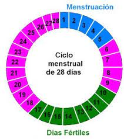

Preguntas frecuentes sobre Salud Sexual y Reproductiva.
1. ¿Cuáles son los cuidados que debo tener para tener relaciones sexuales saludables?
- Utilizar el DOBLE MÉTODO, tanto anticonceptivo como de barrera
- Entre los métodos de prevención efectivos están la abstinencia y el uso del condón masculino y femenino.
2. ¿Qué factores influyen en la elección de un método anticonceptivo?
- Antecedentes de trastornos de coagulación o trombofilia familiar o personal, y/o alergia al látex.
- Posibles cambios del ciclo menstrual en particular un sangrado prolongado, excesivo y/o amenorrea.
- Retraso en el retorno a la fertilidad.
- Falta de protección contra ITS e infección por VIH.
- Efectos secundarios y complicaciones posibles.
- Número de parejas.
- Ciclos menstruales.
- Infecciones genitales y de transmisión sexual.
- Embarazos anteriores.
- Edad de la pareja.
- Consumo de tabaco, drogas, alcohol.
- Antecedentes de enfermedades previas: Depresión, Diabetes, Hipertensión arterial, Bocio, Epilepsia, Enfermedades de la coagulación, o Glaucoma y otros problemas de visión, o Jaquecas y cefaleas.
- Trastornos de la alimentación: obesidad, anorexia.

3. ¿Cuáles son los métodos Hormonales?
- Píldoras combinadas con estrógeno y progesterona o píldoras de sólo progesterona.
- Inyectables e implantes de progesterona.

4. ¿Cuáles son los métodos Mecánicos de barrera?
- Preservativo. Ventaja adicional de prevenir infecciones transmisión sexual.

5. ¿Cuáles son los métodos naturales ?
- Ritmo.
- Método del moco cervical o Billings.
- Lactancia Materna

6. ¿Se recomiendan los métodos naturales en adolecentes?
- Los métodos naturales son difíciles de usar por la alta frecuencia de ciclos irregulares que presentan las adolescentes, por el tipo de comportamiento sexual, la práctica y conocimiento que se requiere, razón por la cual no se recomiendan.

7. ¿Cuales son las Medidas de protección para prevenir embarazo en la adolescencia e ITS/VIH?
- Postergación de la edad de inicio de las relaciones sexuales.
- Pareja única.
- Uso correcto del condón.

8. ¿Cuáles son los Signos de ITS?
- Secreción vaginal.
- Descarga uretral
- Llagas o úlceras genitales
- Ganglios o nodos inguinales inflamados
- Dolor abdominal